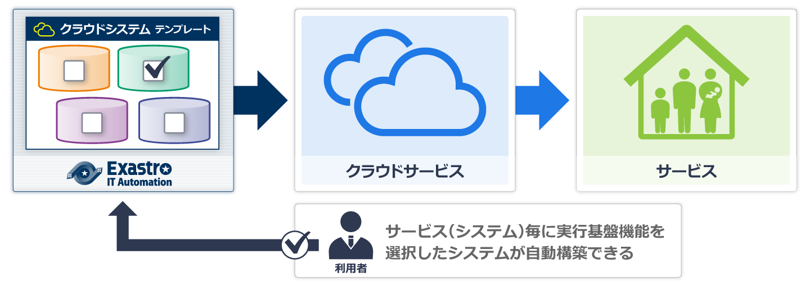

Exastro IT Automation Setting samplesとは
Exastro IT Automationのエクスポート／インポート機能を使って、クラウドシステムとの連携やCMDBとしての活用を簡単に開始できるテンプレート（パッケージファイル）を提供します。

Setting samples list
|
|
ダウンロード |
|---|---|---|
|
||
|
|
|---|---|
|
|
|
|
|
Cloud Systemテンプレート
CloudSystemテンプレートは「設計済みクラウドシステムモデルのIaC(Infrastructure as a Code)」です。 運用管理やセキュリテイなど運用上必須の機能が構築済みであることが特徴です。
自動構築ツール”Exastro IT Automation”に本テンプレートを組み込むことで、パラメータ調整＋実行の2アクションでクラウドサービス上にシステムを提供することが可能です。

Cloud Systemテンプレート 1st-ModelオートスケーリングWebシステム(AWS)
AWSクラウドサービス上でのWeb/APシステム提供を想定した、スケールアウト型サーバと付帯機能を組合せたプラットフォームを提供します。
Exastro IT Automationに本テンプレートを組み込むことにより、以下のような流れでAWSクラウドサービスへの環境自動構築が実現可能です。

導入手順
CMDBテンプレート
CMDBテンプレートは構成管理データベースの枠組みを提供します。構成管理の対象ごとに過去事例からリファレンスモデル化した構成管理データベースをExastro IT Automationに適合するように設計、利用しやすい形でユーザに提供します。
(CMDBテンプレートは後日公開予定)
データセンタ管理(DCIM)

CMDB(DCIM) is under construction.
IPアドレス管理(IPAM)
CMDB(IPAM) is under construction.
資源管理
CMDB(資源管理) is under construction.
クラウド管理
CMDB(クラウド管理) is under construction.